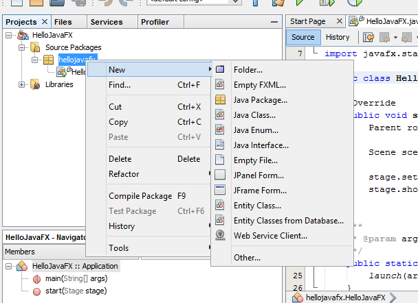
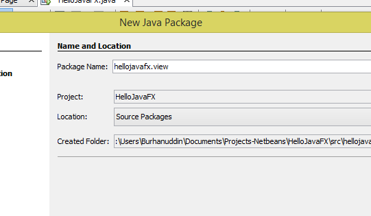
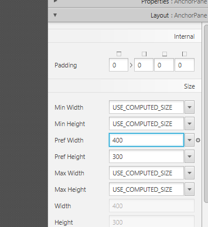
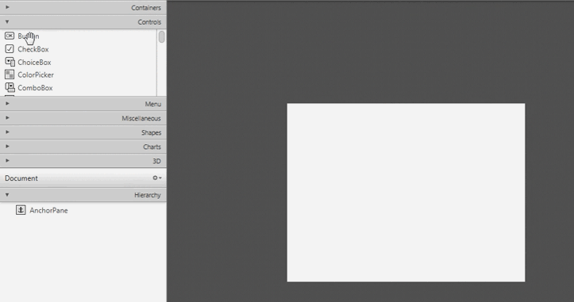
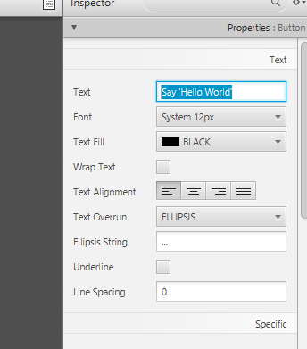
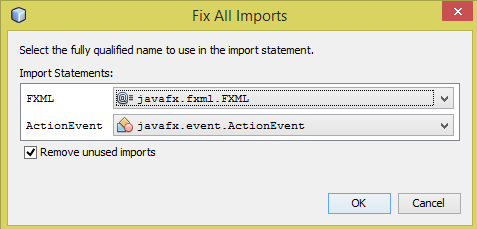
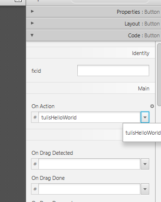
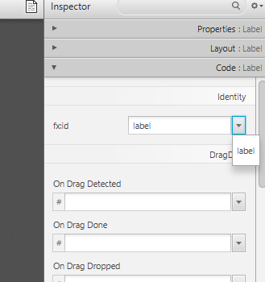

FXML
Program HelloJavaFX sebelum ini dibuat hanya dengan menggunakan code Java. Cara ini tidak menggunakan kaedah model-view-controller (MVC). Dengan kaedah MVC, kita boleh menggunakan FXML untuk menentukan rupa bentuk program kita.
Sekarang kita akan delete balik projek HelloJavaFX sebelum ini dan akan buat benda yang sama tetapi menggunakan FXML.
Jadi, seperti sebelum ini klik File kemudian New Project. Pilih
kategori JavaFX, dan pilih projek JavaFX FXML Application.
Selepas klik Next, namakan projek kita, contohnya HelloJavaFX.
Setelah selesai, kita akan dapat tiga file iaitu HelloJavaFX.java,
FXMLDocument.fxml, dan FXMLDocumentController.java. Anda boleh
run program tersebut walaupun program tersebut agak lain daripada
program sebelum ini.
Untuk menunjukkan cara untuk membuat file FXML, kita akan delete dua file ini:
- FXMLDocument.fxml
- FXMLDocumentController.java
Create file FXML
Sebelum itu, kita akan membuat satu package baru untuk menyimpan file FXML. Anda boleh abaikan step ini, tetapi saya galakkan untuk membuat package baru supaya code lebih tersusun.
Klik kanan pada package hellojavafx, kemudian New, dan klik
Java Package.

Namakan package ini sebagai hellojavafx.view dan klik Finish.

Untuk membuat file FXML yang baru, klik kanan pada package view,
kemudian New, dan klik Empty FXML. Namakan apa-apa sahaja, jadi
kita akan namakan file tersebut sebagai Home. Selepas klik Next,
tick pada Use Java Controller. Selepas Next yang seterusnya,
ikut suka anda mahu menggunakan CSS ataupun tidak. Akhir sekali, klik
Finish.
Edit FXML menggunakan Scene Builder
Jika anda sudah install Scene Builder, double-click file
Home.fxml untuk edit menggunakan Scene Builder.
Sekarang kita akan buat program sama seperti HelloJavaFX sebelum ini. Jadi, kita resize AnchorPane kepada saiz 400×300. Klik pada AnchorPane tersebut, dan segala Properties akan terpapar pada menu sebelah kanan. Klik pada Layout dan tukar lebar (width) dan tinggi (height).

Untuk menambah control (atau widget) pada Pane, lihat menu di sebelah
kiri dan klik Controls, kemudian tarik saja ke Pane tersebut.

Kita boleh menukar text pada button tersebut di menu sebelah kanan bahagian Properties.

Setelah selesai, kita boleh save dan tutup Scene Builder.
FXML injection
Sekarang kita akan tambah fungsi kepada button tersebut menggunakan
FXML injection.
Buka HomeController.java dan tambah code seperti berikut:
package hellojavafx.view;
import java.net.URL;
import java.util.ResourceBundle;
import javafx.event.ActionEvent;
import javafx.fxml.FXML;
import javafx.fxml.Initializable;
public class HomeController implements Initializable {
@FXML
private void tulisHelloWorld(ActionEvent event) {
System.out.println("Hello World!");
}
/**
* Initializes the controller class.
*/
@Override
public void initialize(URL url, ResourceBundle rb) {
// TODO
}
}
Tips: Untuk import secara automatik menggunakan Netbeans, tekan
Ctrl+Shift+I. Pastikan juga anda import dari package javafx.

FXML injection ialah tanda @FXML yang kita letakkan pada method
tulisHelloWorld(). Jika kita tidak letak @FXML, Scene Builder
takkan jumpa method tersebut.
Sekarang kita sudah boleh menghubungkan code dengan GUI
kita. Double-click pada Home.fxml untuk membuka kembali Scene
Builder. Klik pada button, dan pilih method tulisHelloWorld() di
menu sebelah kanan bahagian Code.

Setelah selesai, save dan tutup Scene Builder.
Run
Sebelum run, ada sedikit yang perlu kita tukar pada code disebabkan
kita ada menambah package view sebelum ini.
Buka HelloJavaFX.java dan tukar path ke file FXML seperti berikut:
package hellojavafx;
import javafx.application.Application;
import javafx.fxml.FXMLLoader;
import javafx.scene.Parent;
import javafx.scene.Scene;
import javafx.stage.Stage;
public class HelloJavaFX extends Application {
@Override
public void start(Stage stage) throws Exception {
Parent root = FXMLLoader.load(getClass().getResource("view/Home.fxml"));
Scene scene = new Scene(root);
stage.setTitle("Hello World!");
stage.setScene(scene);
stage.show();
}
/**
* @param args the command line arguments
*/
public static void main(String[] args) {
launch(args);
}
}
Kita juga boleh menambah title pada program kita menggunakan
stage.setTitle() seperti di atas.
Sekarang program sudah siap sedia untuk run, dan hasilnya adalah sama seperti program sebelum ini.
FXML injection (extra)
Selain untuk menambah fungsi kepada sesebuah control, FXML injection
juga boleh digunakan untuk meletakkan id pada control. Ini
bertujuan untuk membolehkan kita mengawal control melalui code.
Contohnya jika kita mahu tulis Hello World! di GUI.
Sekarang tambah control Label ke atas AnchorPane. Padamkan text
Label tersebut. Buka HomeController.java dan tambah code seperti
berikut:
package hellojavafx.view;
import java.net.URL;
import java.util.ResourceBundle;
import javafx.event.ActionEvent;
import javafx.fxml.FXML;
import javafx.fxml.Initializable;
import javafx.scene.control.Label;
public class HomeController implements Initializable {
@FXML
private Label label;
@FXML
private void tulisHelloWorld(ActionEvent event) {
System.out.println("Hello World!");
}
/**
* Initializes the controller class.
*/
@Override
public void initialize(URL url, ResourceBundle rb) {
// TODO
}
}
Kita juga akan membuatkan program paparkan Hello World! di Label,
bukannya di command line. Jadi, kita tukar method
tulisHelloWorld() seperti berikut:
package hellojavafx.view;
import java.net.URL;
import java.util.ResourceBundle;
import javafx.event.ActionEvent;
import javafx.fxml.FXML;
import javafx.fxml.Initializable;
import javafx.scene.control.Label;
public class HomeController implements Initializable {
@FXML
private Label label;
@FXML
private void tulisHelloWorld(ActionEvent event) {
if (label.getText().isEmpty()) {
label.setText("Hello World!");
} else {
label.setText("");
}
}
/**
* Initializes the controller class.
*/
@Override
public void initialize(URL url, ResourceBundle rb) {
// TODO
}
}
Buka kembali Home.fxml. Klik pada Label, kemudian pilih id di menu
sebelah kanan bahagian Code.

Save dan tutup Scene Builder. Sekarang kita sudah boleh paparkan
Hello World! terus di GUI.